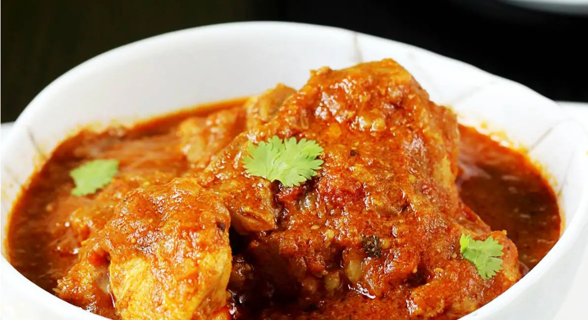

Chicken Curry

Description
Chicken Curry is an indian traditional dish simmered with tomatoes, garlic and spices.
It uses bone-in chicken which is essence of indian meat curries
Ingridents
- Bone-In Chicken
- Tomatoes
- Ginger & Garlic (minced paste)
- onions
- oil
- blend of whole cinnamon sticks, bay leaves, green cardamom, cloves, and black peppercorns.
- garam masala
- salt
Steps
- Marinade the boneless chicken breast pieces with all the listed powdered spices, ginger-garlic, and whole spices.
- Heat a heavy-bottom pan over high heat. Add the oil to the pan. Once the oil starts to heat up, add chopped onions, and ½ teaspoon of salt to the pan.
- Turn the heat to medium and sauté the onions until golden. It takes about 5 to 8 minutes.
- Add marinated chicken to the pan. Sauté until chicken is no longer pink.
- Add tomato puree and stir well.
- Cover and cook for 15 to 20 minutes or just until the chicken is tender.
- Garnish with chopped cilantro and serve it with plain rice, roti, or naan.